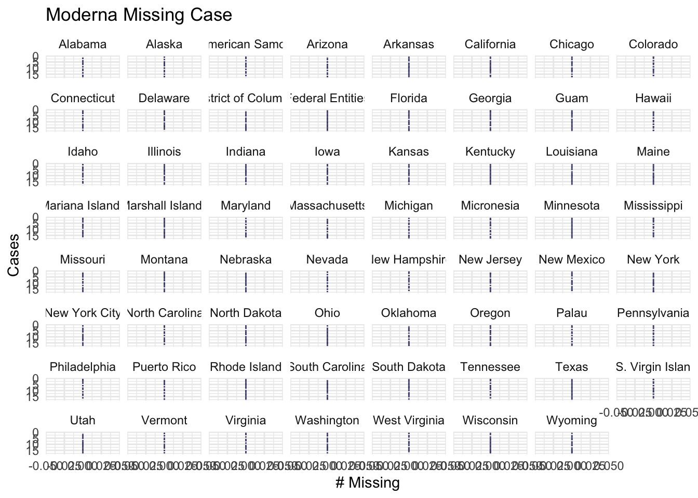

Chapter 4 Missing values
4.1 Data of CDC COVID-19 Vaccinations in the United States
Below is the plot mentioned in Sec 3.1 for the vaccination_us table:

After plotting the missing values graph we discovered that there are three states contains missing values. They are Bureau of Prisons, Dept of Defense and Veterans Health. Theses three values are not any states so we decided to remove these three records
For thecase_death_clean_overtime table, we plot the table by states to see if there is any missing value again.
There is no missing values in this table (0 in the means there is no new case or new death for the date)
4.2 Data of CDC COVID-19 Vaccine Distribution Allocations by Jurisdiction
Fortunately, the three data sets provided by CDC officials are all cleaned and don’t contain any missing values. For those jurisdictions that don’t give any vaccination at a certain period, the corresponding entry is default to 0. Therefore, we didn’t find any missing values regarding these tables.
